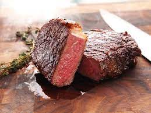

Sous Vide New York Strip

Why sous vide your steak? Because it's the most reliable way to get perfectly cooked meat every single time. This guide covers everything you need to know, from temperature guidelines to FAQs to searing and serving tips.
- 2 1/2-lb. New York strip steaks*
- 2 herb sprigs (rosemary, thyme, or oregano)
- Fresh herbs
- Butter
- First, fill a large container with water an
- Salt and pepper the steak and let the steak sit for 10-15 minutes
- Place steak into the sous vide
- Heat a large cast iron skillet over high heat
- Remove from heat and let the steak sit for 10 minutes